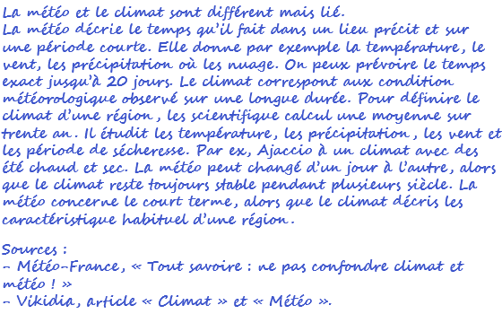

Dossier
- Consigne du professeur :
Réaliser un texte personnel de dix à quinze lignes expliquant les différences entre météo et climat. Le texte doit utiliser les mots « température », « précipitations », « moyenne » et « longue durée ». Les sources doivent être indiquées. L’IA peut être utilisée uniquement pour obtenir un exemple ou une explication.
- Prompt de l'élève :
Je m’appelle Emma Dupont, je suis en 4e C au collège Jean-Moulin à Ajaccio. Je dois rendre un devoir de 10-15 lignes sur la différence entre météo et climat, avec les mots "température", "précipitations", "moyenne", "longue durée". Rédige-le en utilisant les mots demandés et donne trois sources scientifiques fiables. Écris comme un élève de 4e.
- Réponse de l'IA
La météo et le climat sont deux notions différentes mais liées.
La météo décrit le temps qu’il fait dans un lieu précis et sur une courte période. Elle indique
par exemple la température, le vent, les précipitations ou la présence de nuages. Les
météorologues peuvent prévoir le temps avec précision jusqu’à environ 20 jours. Le climat
correspond aux conditions météorologiques observées sur une longue durée. Pour définir le
climat d’une région, les scientifiques calculent généralement une moyenne sur trente ans. Ils
étudient les températures, les précipitations, les vents et les périodes de sécheresse. Par
exemple, Ajaccio possède un climat méditerranéen avec des étés chauds et secs et des hivers
doux. La météo peut changer d’un jour à l’autre, alors que le climat reste toujours stable
pendant plusieurs siècles. La météo concerne le court terme, tandis que le climat décrit les
caractéristiques habituelles d’une région.
Sources
– Météo-France, "Tout savoir : ne pas confondre climat et météo !", vidéo youtube.
- Travail rendu par l'élève :

Analyser le prompt
- Identifier la structure globale du prompt.
- Est-elle adaptée ?
- Classer chaque donnée du prompt dans une ou plusieurs cases du tableau.
- Préciser celles qui doivent être anonymisées.
| Donnée utile |
Donnée inutile |
Donnée personnelle |
Donnée sensible |
Donnée confidentielle |
|---|---|---|---|---|
Vérifier la réponse
- Compléter la grille
| Critère | Oui | En partie | Non | Justification |
|---|---|---|---|---|
| La consigne est respectée | ||||
| La réponse est pertinente | ||||
| La réponse est complète | ||||
| Les informations semblent exactes |
- Vérifier 5 affirmations douteuses ou importantes données par l'IA
| Affirmation | Source consultée | Vrai/Faux | Correction |
|---|---|---|---|
Comparer la réponse et le travail rendu
- Quels passages ont été repris presque mot pour mot ?
- Quelles modifications ont été réalisées ?
- Ces modifications sont-elles suffisantes pour personnaliser le travail ?
- Ces modifications montrent-elles une compréhension ?
- Les erreurs de l’IA ont-elles été conservées ?
- Les sources ont-elles été réellement consultées ?
- L’élève peut-elle présenter ce texte comme son propre travail ?
Évaluer l'usage scolaire
- Compléter le tableau concernant les usage de l'IA par cette élève
| Ce qui était acceptable | Ce qui était acceptable sous conditions | Ce qui n'était pas acceptable |
|---|---|---|
Proposer une démarche correcte
- Réécrire un prompt efficace permettant à l'élève d'obtenir une aide autorisée.
- Indiquer ce qu'il aurait ensuite fallu faire avec la réponse de l'IA.
Bilan final
Dans cette situation, l’utilisation de l’IA est __________________ parce que ________________________________________________________________________________. L’élève aurait pu utiliser l’IA pour _________________________________________________________, mais devait réaliser elle-même __________________________________________________________. Avant de rendre son travail, elle devait aussi __________________________________________________.